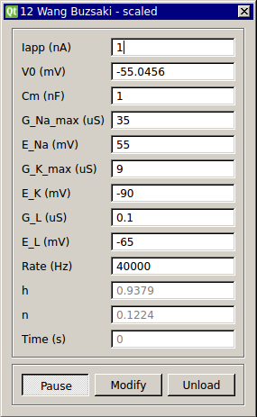

Wang-Buzsaki Model Neuron
Requirements: None
Limitations: None
The Wang-Buzsaki model uses the Hodgkin-Huxley formalism to describe a single-compartment neuron with sodium and potassium conductances. For the transient sodium current, the activation variable m is assumed fast and substituted by its steady-state function.
Wang XJ, Buzsáki G (1996) Gamma oscillation by synaptic inhibition in a hippocampal interneuronal network model. J. Neurosci. 16: 6402–6413.

Input Channels
- input(0) - Istim : input current (A)
Output Channels
- output(0) - Vm : membrane voltage (V)
Parameters
- Iapp - applied current (nA)
- V0 - voltage (mV)
- Cm - membrane capacitance (nF/cm^2)
- G_Na_max - max. Na+ conductance density (uS/cm^2)
- E_Na - Na+ reversal potential (mV)
- G_K_max - max. K+ conductance density (uS/cm^2)
- E_K - K+ reversal potential (mV)
- G_L - leak channel conductance density (uS/cm^2)
- E_L - leak channel reversal potential (mV)
- rate - rate of integration (Hz)
States
- h - sodium inactivation
- n - potassium inactivation
- Time - time (s)